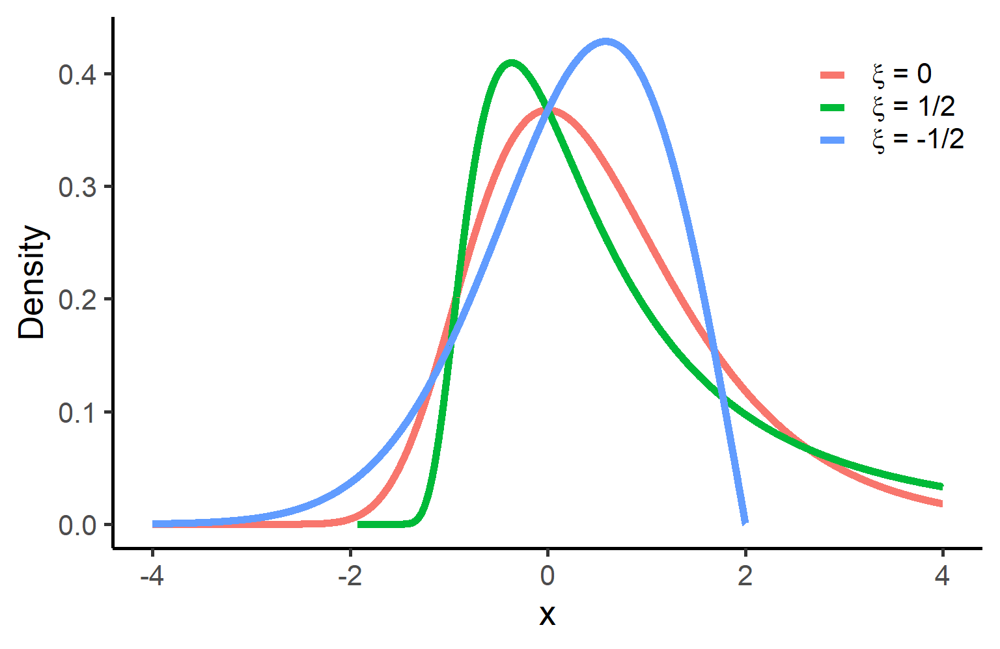
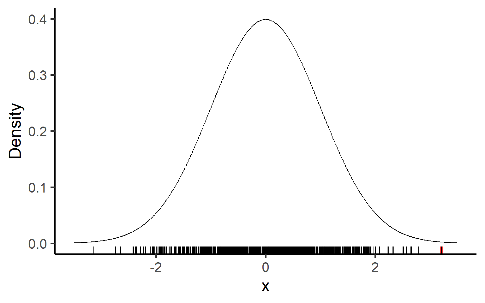
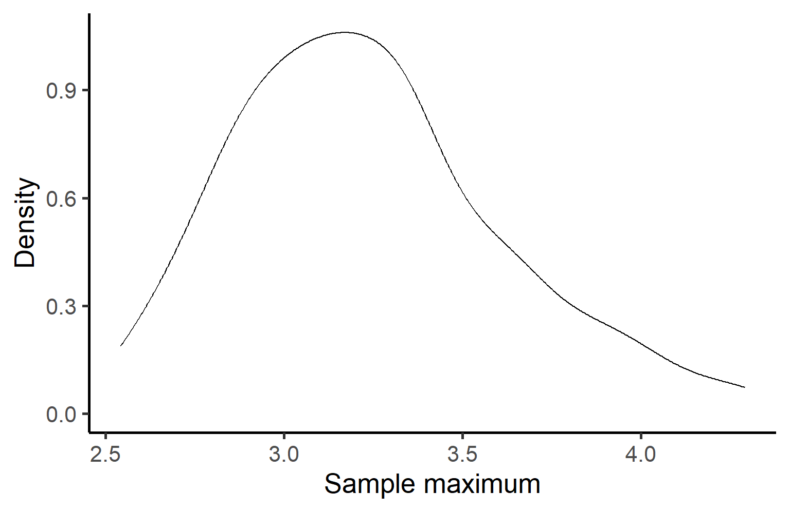
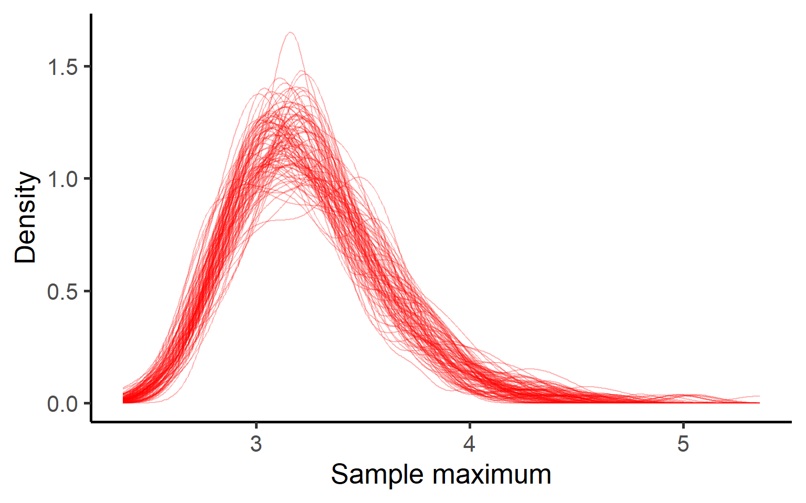
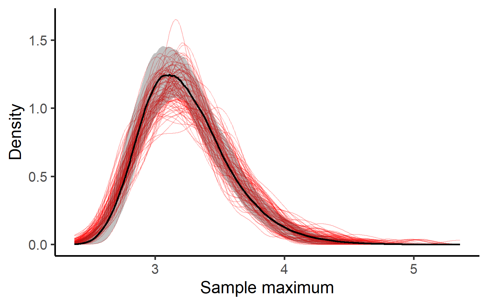
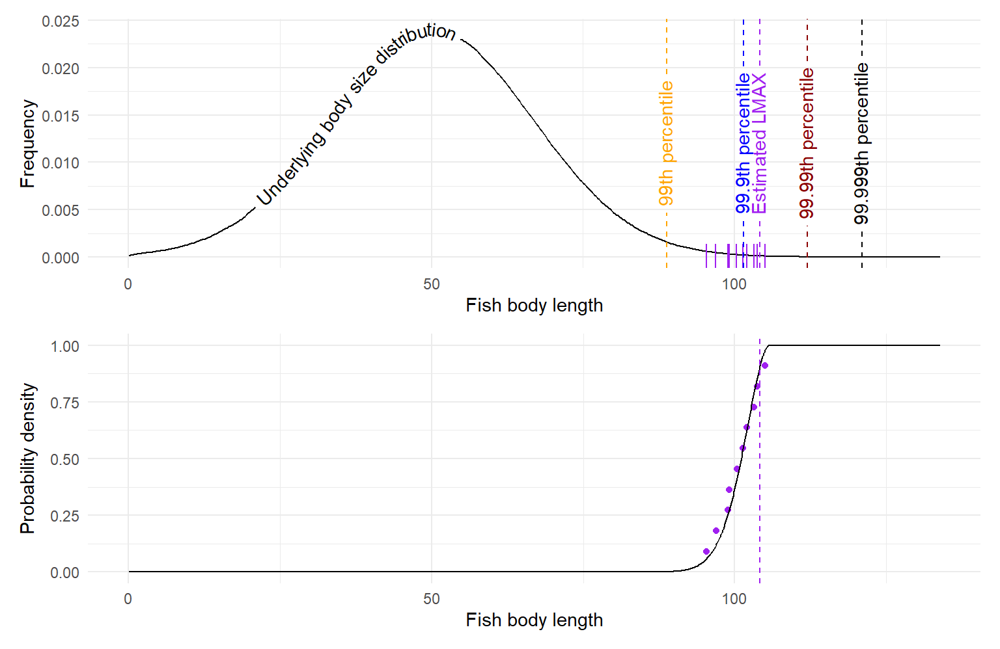
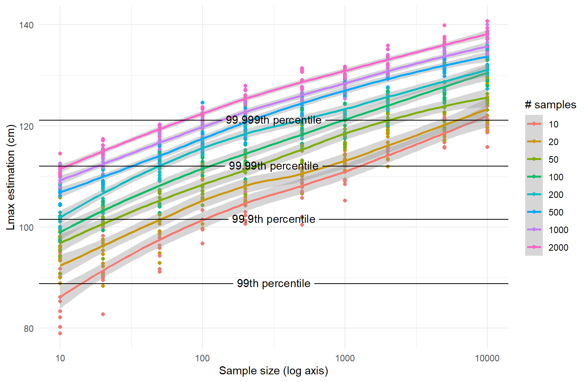

Improvements on the application of extreme value theory on estimating the maximum length of fishes
Background
Extreme Value Theory (EVT) is a branch of statistics that focuses on the extreme deviations from the median of probability distributions. Traditionally, EVT has been applied in fields such as hydrology, finance, and environmental sciences to model and predict rare events, such as floods, market crashes, and extreme weather conditions.
In this analysis, we extend the application of EVT to estimate the maximum lengths of fish species. While previous studies, such as Formacion (1991), have utilized the Gumbel distribution for this purpose, we aim to incorporate the broader Extreme Value Distribution (EVD) framework. This approach allows for a more comprehensive analysis by considering different types of extreme value distributions, including the Gumbel, Fréchet, and Weibull distributions.
The Generalized Extreme Value (GEV) distribution is defined as:
\[ G(x; \mu, \sigma, \xi) = exp(-[1 + \xi(\frac{x-\mu}{\sigma})]^{-1/\xi}) \]
where:
\(\mu\) is the location parameter, \(\sigma\) is the scale parameter, \(\xi\) is the shape parameter.
By applying the GEV distribution, we can better estimate the maximum lengths of fish species, providing valuable insights for ecological and biological studies.
The Gumbel distribution is a simplified variation of the GEV distribution where \(\xi = 0\).
GEV
Shape of GEV
The shape of the GEV distribution is defined by the shape (\(\xi\)) parameter. Below, location (\(\mu\)) is fixed at zero, and scale (\(\sigma\)) is fixed at one.
Understanding GEV
We can test the GEV distribution with simulated data.
If we take a normal distribution with a mean of 0 and standard deviation of 1, and take a sample of length 1000, and calculate the maximum of this.

Given 100 samples, each of length 1000, from a normal distribution (\(\mu\) = 0, \(\sigma\) = 1), we take the maxima of those samples and look at the distribution of those 100 maxima. According to theory, they should follow the GEV distribution.

Since there is variation in the sampling, we can run this multiple times, each with a new seed, to see how much variation there is.

Fitting GEV to simulated maxima

Estimating maxima
The plots show that sample maxima can be well described by the GEV distribution. The following question from this, is how can we use the fitted GEV distribution to estimate the maximum of the underlying distribution.
For this we will use a slightly more realistic example of the underlying ‘true’ population in relation to fish body lengths.
The underlying ‘true’ distribution of body lengths within a population will be defined by a normal distribution with a mean of 50 (cm) and a standard deviation of 16.67 (= one third of 50).
We will take 10 samples each of length 1000 from the underlying population, to get 10 sample maxima to estimate the GEV distribution.

In this simple case the estimated maximum length is determined by the sampling effort. The greater the sampling effort, the more likely you are to observe extreme length measures. It is therefore important to account for the sampling effort in the estimation to be clear as to what it is you are estimating. Using 10 sample maxima, each derived from a sample size of 1000, we observe the estimated LMAX to be between the 99.9th percentile and the 99.99th percentile. If we have larger sample sizes, it can be expected that this sample size increases.
We can vary the sample size and the number of samples (i.e. the number of maxima) and see how this varies the ‘true’ percentile that is being estimated.

References
Formacion, Sonia P. 1991. “Extreme Value Theory Applied to the Statistical Distribution of the Largest Lengths of Fish.” Asian Fisheries Science 4 (2). https://doi.org/10.33997/j.afs.1991.4.2.001.